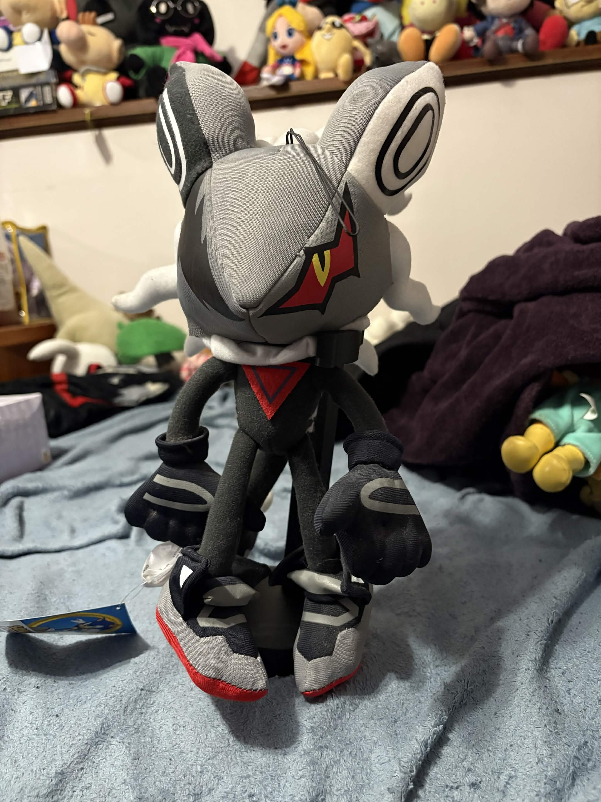
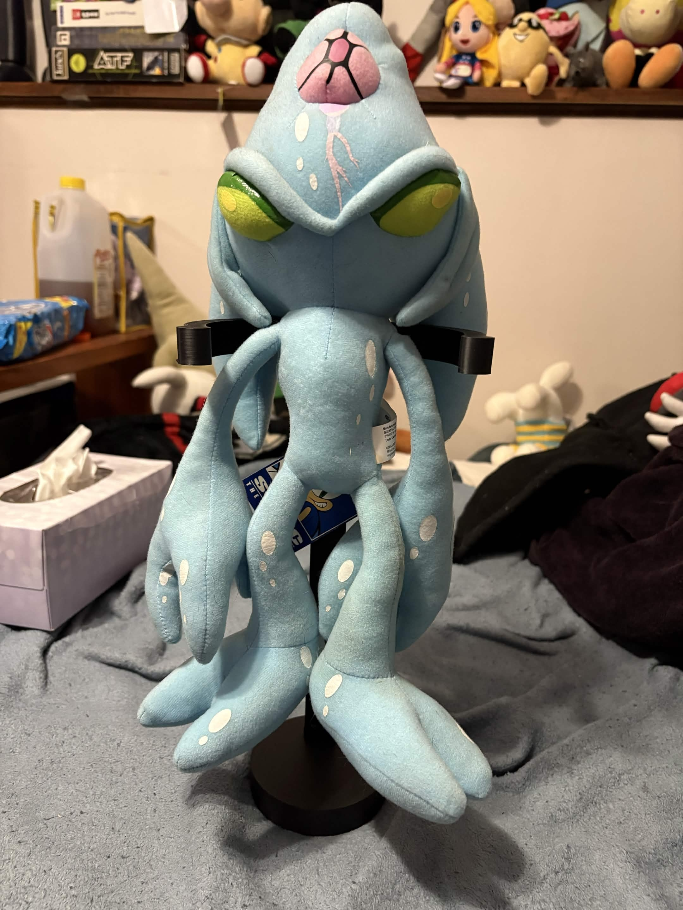
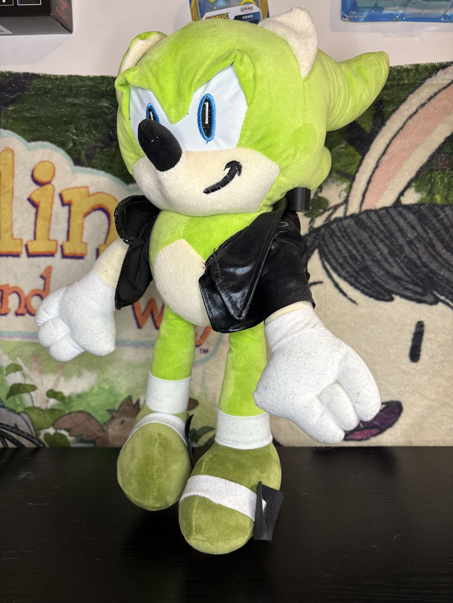
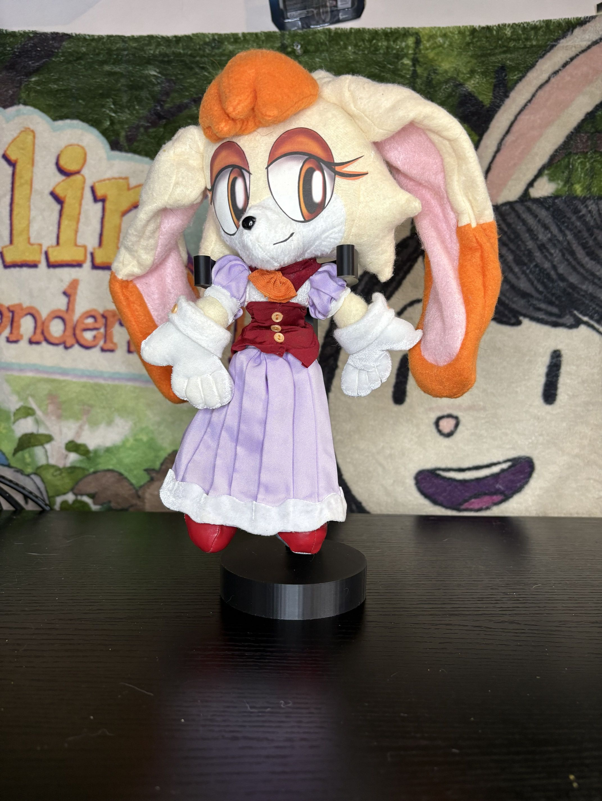

INFINITE
Release Date: 2021
Company: Great Eastern
Infinite was the Villain in the absolutely miserable game, Sonic Forces. While the game is like.. DREADFUL. However, I do like infinite. I can't tell you why really, but he's kinda cool in that overly edgy way. Great Eastern is well know for making more.. niche characters into plushes which is always awesome to see which is why i had to snag this guy when he released- I dunno if hes a favorite of mine; but I like him a lot :)
I should state as well, GE's plushes are immensely high quality and very accurate to their characters designs however, the material they use tends to be rough, and not great for placement on a bed- def not a 'cuddling' plush, and that goes for their entire line.

CHAOS
Release Date: 2009 (Was Rereleased Recently)
Company: Great Eastern
Chaos is one of my favorite sonic.. Villains? I mean he was in SA1 but I don't think he's particularly a 'villain'. Either way though this plush is Fantastic and for sure one of my favorites. It's got GE's general high quality and is extremely accurate to the game. obviously its GE so it's material is the same rough kinda fuzzy stuff, oh and the materials for the eyes is a sorta.. Iron-On kinda feeling? i feel like if not kept in a nice enviornment could peel and be damaged.
A small side note, this is the original release of the plush from 2009, i got it around 2018ish? not sure exactly.. It was Rereleased a couple of years back and can still be gotten off like, amazon currently as of 2026.

Chao (2009)
Release Date: 2009
Company: Great Eastern
Just a little guy!
This is a Great Eastern Chao, released the same year as the Chaos Plush. There isn't much really to say about him aside from hes ABYSMALLY small.
It's super duper tiny, kinda cute in that way but also would probably be easy to lose? it's the same rough fuzzy material, for a while it was the only Chao plush I had, and one of the few chao plushes that were out for years up until a few years ago when they started making more chao merch. so yeah, not much to say about em here he's just a lil silly.
Out of all the chao plushes though, this is definitely the worst, unfortunately. It doesn't feel good, it isn't cuddle-able given it's just far too small.
but again, it's one of the earlier chao plushes- and I guess.. maybe in scale with the Chaos? thinking about it now that might be why its so small since chaos is really big.

Bootleg Mexican Rainbow Sonic
Release Date: Unknown, Possibly 2020?
Company: Unknown
This is a weird one, But I wanted to break up the wall of Great Easetern plushes since I have a lot of them and as nice as they are they can be a little.. boring lol.
This is a somewhat well known Mexican Bootleg, unfortunately I don't know much of it's origins. I see it's listed in various places online- like US Ebay but also assumably spanish speaking countries marketplace; Specifically a place called Mercado Libre, I'm not familiar with it but it seems to be a sorta amazon like site?
a sorta e-commerce site, clearly. On there these are listed from a seller of going by the name of BEAR FACTORY- now I have no clue if they are the original procucers of this plush but most places at least in my loose research point back to there. I know of course these are sold in real markets and stores in mexico, which is how I got mine. someone I had used to associate with went to Mexico and found this there for me, along with another plush in this list.
Nonetheless, It's a very unique plush, I don't think it's rare because you can find it in any mexican street market- don't believe Ebay Reseller lies!

Shadow The Hedgehog (Nanco)
Release Date: 2010
Company: Nanco
This- and all of Nancos sonic plushes are some of the most hideous, gross looking sonic plushes like full stop they're fucking terrible. They have weird flat hands, awful material, they just look. Bad. I know they're arcade prize plushes, and like those are uuuusually not great? but these are like, especially bad. You can get such a better shadow plush from literally anywhere.
Frankly, I hate this fuckin' freak and I think I got it in a lot? and I don't know if it was worth it to have this bitch in my home LOL.

SegaSonic Sailor Tails
Release Date: 1994
Company: Sega
Apologies for this one, he's a tad dirty- as well as a few other plushes- I'm a tad scared to wash this one in like a washer given his age? I gotta figure out how to spot clean stuff tbh...
Nonetheless, this is the segasonic sailor tails, I love classic tails he's always absolutely adorable. SegaSonic UFO plushes were always super cute, I can't say they're high quality? I mean, they're UFO plushes from the 90's so like, they look good and better than current ones that's for sure!
This plush if ya can't tell is old and while he's not in the best shape, it's better than some other I've seen online. With all that said, it's a cute plush for sure but it does use felt for some parts, which aren't too comfy to hold. He's also quite small which while is very cute again, on the cuddle-able scale he's pretty low on that list- but he's probably good for a cute little display!

E-102 Gamma
Release Date: 2022
Company: Great Eastern
Oh my beloved, E-102 Gamma... I love gamma. If you you know anything about me you'll know I love E-102 Gamma, I speedran his campaign in SA1 and even still have a Figure of him from when I was a kid which is now, fairly expensive so thats kinda cool? Either way- there was once a Plush of Gamma, from around 1998 and It's.. Beyond words. It's beautiful, it's a perfect recreation of what he looks like in the game. It's however insanely rare, was hard to win even at it's time of release and covered in a vinyl like material that flakes and peels with age, and does it even faster when not kept in perfect environments.
This however, is NOT That plush. This pictured here is the 2022 release of their E-102 Gamma plush. While it's.. definitely not as good, it's the only other plush of a relatively niche character and for that I love it. I do wish he wasn't like.. directly bipedal- and like he's bipedal but i mean like with totally straight legs. Like a person, unlike how he is in the game with legs that go backwards, digitigrade legs? is that the term? not sure, either way about the plush itself!
It's a Great Easterm plush so same complaints about their rough material but a very good design and however not exactly accurate to the game like the other GE plushes. He's still one of my favorites, I just wish it was a tad more 'Game Accurate' and maybe a bit softer- I know its dumb asking for a robot plush to be soft but whatevs.
Either way, he's awesome and while I have little gripes with it, It's still Gamma- and that's awesome :3

Jet The Hawk
Release Date: 2014
Company: Great Eastern
This was another on I got in a lot, And while It's a cool High Quality plush I just don't much care for Jet as a character. I never even played the Riders game if im being honest. I don't have much else to say about him and little to say about the plush, It's another banger from GE and looks great, game accurate to an extent. I think he's also supposed to have his goggles,but when I had gotten it from a lot they were probably long gone haha. Uuhhhhhh I honestly dunno what else to add to this, It's a good plush well made, thats about it haha.

Cheese The Chao
Release Date: 2020
Company: Jakk's Pacific
Another Chao! Lately (and by lately i mean in the last few years) Sega I guess realized how these are cute and marketable little guys that people would buy the fuck out of- and I'm a perfect example of that and this cheese plush is a good example of that because its.. well its okay i guess?
It's like it's soft, its cute, accurate to what a chao is but like.. why does he look like that? what is this face he's making?? Why does it look like someone just punted him or something, Does.. Cheese ever even make this face? I just don't get it but uhh, I guess if you want a chao plush that looks like he's getting kicked in the balls- here you have it.

Cream The Rabbit
Release Date:
Company: Great Eastern

Dark Chao
Release Date:
Company:

Classic Amy
Release Date:
Company: Great Eastern

Knuckles the Echidna
Release Date:
Company: Great Eastern

Scourge the Hedgehog
Release Date:
Company: Unknown

Shadow the Hedgehog
Release Date:
Company: Great Eastern

Super Sonic the Hedgehog
Release Date:
Company: Great Eastern

Sonic the Werehog
Release Date:
Company: Great Eastern

Classic Sonic the Hedgehog
Release Date:
Company: Great Eastern

Shadow the Hedgehog (Toy Network)
Release Date:
Company: Toy Network

Unknown Tails
Release Date:
Company: Toy Network?

Miles Tails Prower
Release Date:
Company: Toy Network

Silver the Hedgehog
Release Date:
Company: TOMY

Eggman
Release Date:
Company: TOMY

Sonic The Hedgehog (Tomy)
Release Date:
Company: TOMY

Knuckles the Echidna (Sanei)
Release Date:
Company: Sanei

Vanilla the Rabbit
Release Date:
Company: Custom